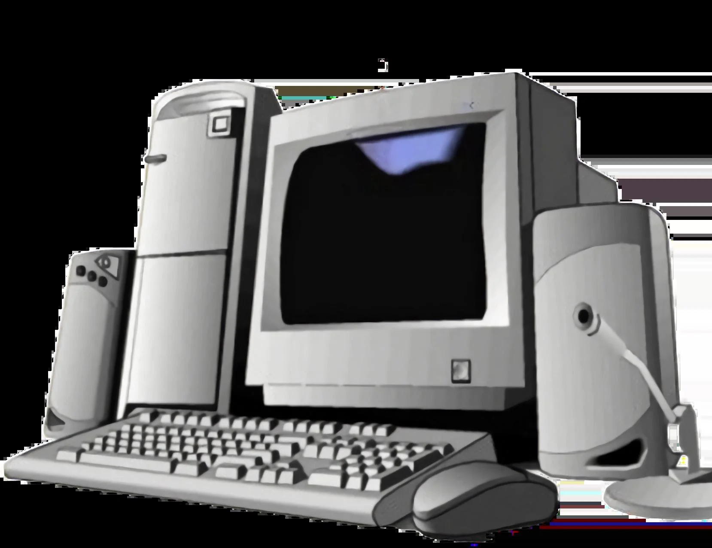
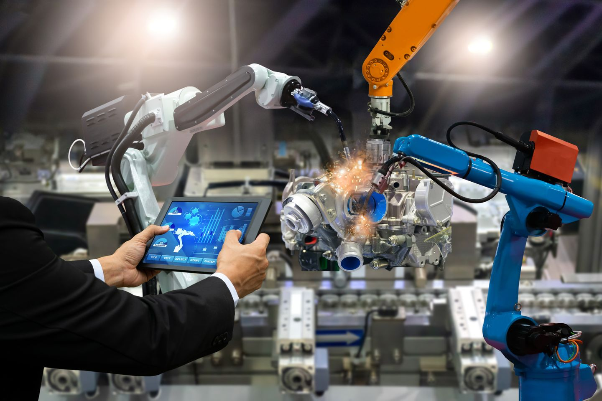

Pengertian dan Latar Belakang Revolusi Industri 3.0
Revolusi Industri 3.0, sering disebut juga sebagai Revolusi Digital, dimulai sekitar tahun 1970-an. Revolusi ini ditandai oleh penggunaan komputer, teknologi informasi, dan otomatisasi produksi. Perkembangan komputer pribadi (PC), mikroprosesor, dan internet menjadi pusat dari perubahan besar ini. Mesin-mesin yang sebelumnya dikendalikan manusia mulai digantikan oleh robot otomatis dan sistem komputerisasi, yang membuat produksi semakin cepat, presisi, dan efisien. Revolusi ini memperkenalkan era otomatisasi dan digitalisasi, di mana data dan informasi menjadi aset penting dalam proses produksi dan bisnis. sumber chat gpt
Perkembangan Teknologi dan Dampaknya terhadap Dunia Industri

Revolusi Industri 3.0 membawa teknologi komputer, robotik, dan perangkat lunak (software) ke dalam dunia industri. Dalam pabrik, banyak pekerjaan manual mulai digantikan oleh mesin otomatis yang dikendalikan komputer, seperti robot lengan otomatis di lini perakitan mobil. Selain itu, perkembangan teknologi komunikasi seperti email, ponsel, dan jaringan internet global memudahkan komunikasi lintas negara dan mempercepat pertukaran informasi. Dunia bisnis berubah drastis, dengan munculnya e-commerce, sistem pembayaran digital, dan software bisnis. Namun, tantangan baru muncul, seperti pengurangan lapangan pekerjaan untuk pekerjaan manual dan kesenjangan teknologi antara negara maju dan berkembang. sumber chat gpt
Pengaruh Revolusi Industri 3.0 terhadap Kehidupan Sosial dan Ekonomi
Secara sosial, Revolusi Industri 3.0 mengubah cara manusia berinteraksi, bekerja, dan belajar. Komputer, internet, dan telekomunikasi memungkinkan kerja jarak jauh (remote working), pembelajaran online, dan komunikasi instan melalui media sosial. Ekonomi global menjadi lebih terhubung dan kompetitif, karena perusahaan bisa beroperasi lintas negara dengan teknologi digital. Revolusi ini juga menjadi dasar munculnya berbagai industri baru berbasis teknologi, seperti perangkat lunak, teknologi informasi (IT), dan layanan digital. Meskipun membawa kemajuan luar biasa, revolusi ini juga memperbesar ketimpangan antara yang menguasai teknologi dan yang tidak, sehingga isu literasi digital menjadi sangat penting. sumber chat gpt
Kesimpulan Revolusi Industri 3.0
Revolusi Industri 3.0 atau Revolusi Digital telah membawa perubahan besar dalam cara manusia hidup, bekerja, dan berkomunikasi. Dengan munculnya komputer, internet, dan otomatisasi, proses produksi menjadi lebih efisien dan cepat, serta membuka peluang baru dalam bidang teknologi informasi dan komunikasi. Revolusi ini juga menghubungkan dunia secara global melalui jaringan internet dan menciptakan berbagai inovasi yang mempermudah aktivitas manusia. Namun, di balik kemajuan tersebut, Revolusi Industri 3.0 juga menghadirkan tantangan baru, seperti berkurangnya pekerjaan manual, ketimpangan akses teknologi, dan ancaman keamanan data. Oleh karena itu, penting bagi masyarakat untuk terus meningkatkan kemampuan literasi digital agar mampu bersaing dan beradaptasi di era digital ini. sumber chat gpt